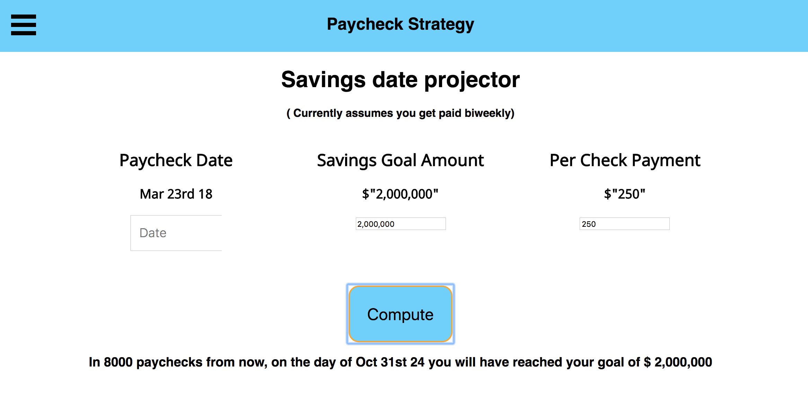
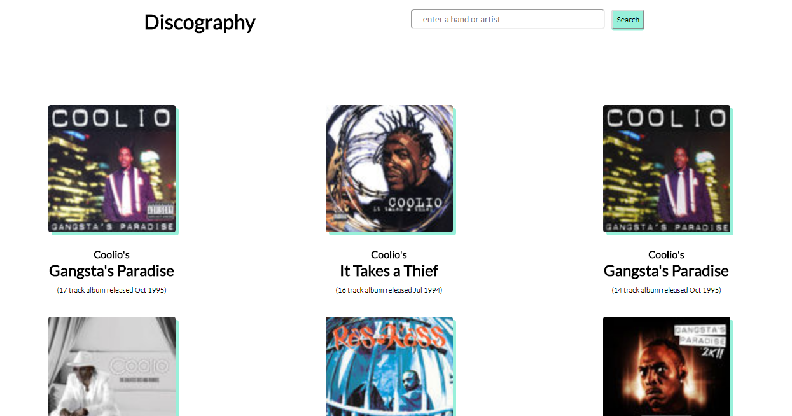
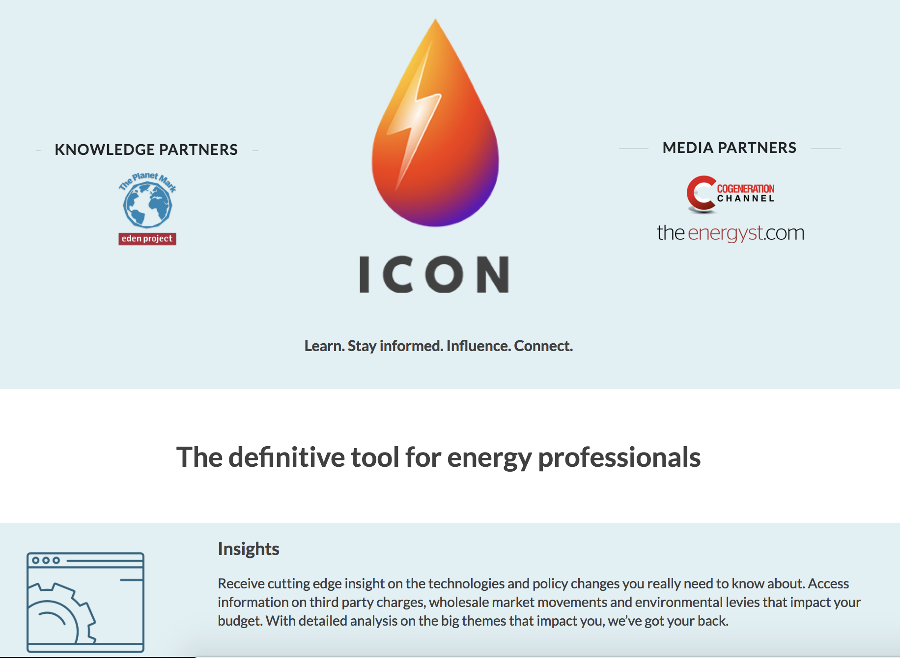

Hello! Nick is a web developer working with a modified MEAN stack of Mongo, Express, React and Node to write full stack web apps suplemented with some other tech and tools. Firebase, Redux, Graphql to name a few. The list is constanty expanding and changing. He is also enjoying building for mobile apps in React-Native.
Nick was born and raised in Mountain View, California, by tech oriented parents - an Oracle DB manager and a Marketing Director, so being computer literate was and has always been a part of his life. After attending college in San Francisco, with an interest in psychology and film, Nick moved to NY to be closer to family. He soon found a job with an Architecture firm and absorbed more and more of their IT and Accounting workload, enabling the firm to let go of IT contracts and consolidate the firm's backend needs.
Around 2015, Nick was getting tired of consuming so many websites and apps and kept seeing the limitations or places where he wanted to tweak the app. Some times a small part of the design or other times add more robust features or even totally redo the app entirely. He really wanted to start creating and contributing, so he started to take MOOC's and follow various tutorials working mainly with Python and Ruby, and then end of 2016 decided to take a bigger step, kick this thing into gear for real. And so he worked through a javascript bootcamp program where he was paired with a senior developer as a mentor. After completing the curriculum Nick has taken on building platforms for clients utliziing React-Redux and Firebase. Working on a small team and also on his own.
When Nick isn't expanding his knowledge of Golang or javascripting away, you can find him rescuing animals with Unwanted NYC Pets, walking his dog around Brooklyn, cycling or running around NYC, upstate NY hiking with his dog or sailing in Gardiners Bay .
Nick would love to hear from you, drop him a line.
Quiz project working with jquery and javascript.This quiz is 10 questions based on the original trilogy. The other Die Hard films are ok, but decided to focus on the 3 greatest films of all time. I'd like to go back and add some more questions for the real Die Hard maniacs and screen cap some of the scenes into gifs with the nifty Gyazo tool and then use those to supplement the questions giving you a an exact moment to jog your memory. Also want to make a Striking Distance quiz, but not sure how many fans will know that one in and out.
A flashcards app to learn more javascript methods, built with Node and Express. Ended up learning PUG template engine to handle the views of this app. This project useses Passport JS for auth and how to set local session variables to mark the user as logged in. If you log in you can add new cards.
A expense/savings date projection app. Wanted to explore airbnb date selector and doing caclulations with dates. The user can input a savings goal or amount of future expense and then designate when their next paycheck is and how much money per paycheck they want to designate for this goal and then the app will let them know the future paycheck date when they reach their goal. This was a quick app one afternoon. I want to add firebase auth to this so users can save multiple goals. Maybe add an interest calculator and some other features.
API project I made, where you enter a band or an artist's name and then queries the iTunes API to display 50 albums related to the query. Built in React, using Fetch to query the iTunes API, and then taking the JSON result and adding to global state with Redux. Imported MomentJs to display album release dates in a human readable format. Clicking on the album image or on the artist name or album title will take the user to the relevant page in itunes.
Upload an album of photos with one drag and drop. Pick the ones you approve of. Save as an album and then invite guests to your album and arrive at a consensus for which photos everyone can agree are publishable.
Working with Offkey Ltd to build a platform that delivers current news about UK energy regulations. Browse current energy updates, check if your organization is compliant with the latest energy regulations and discuss with other members of the industry.
Working for the team at WallPlay to build out their current site in React and also CMS site in react sharing a firebase backend, where they can update content and interact with logged in users. Approving users profile changes, matching with upcoming oppurtunities and more.

(Coded this form with node mailer so you shoot me an email and say hello)